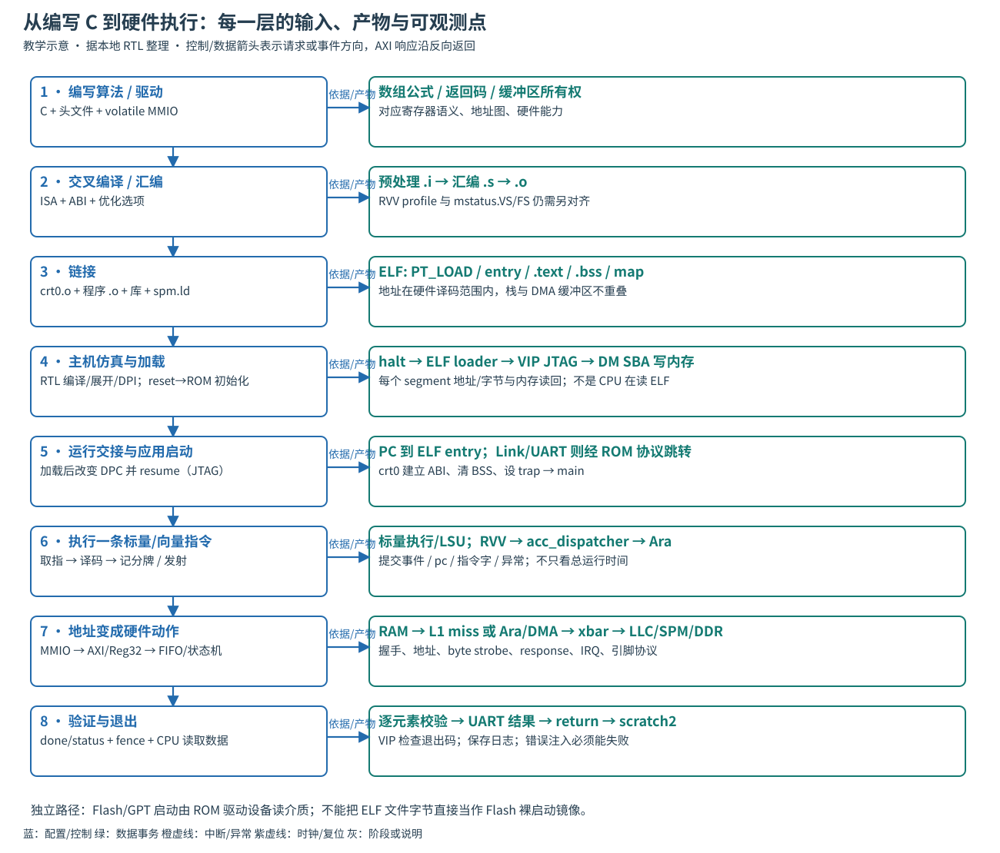
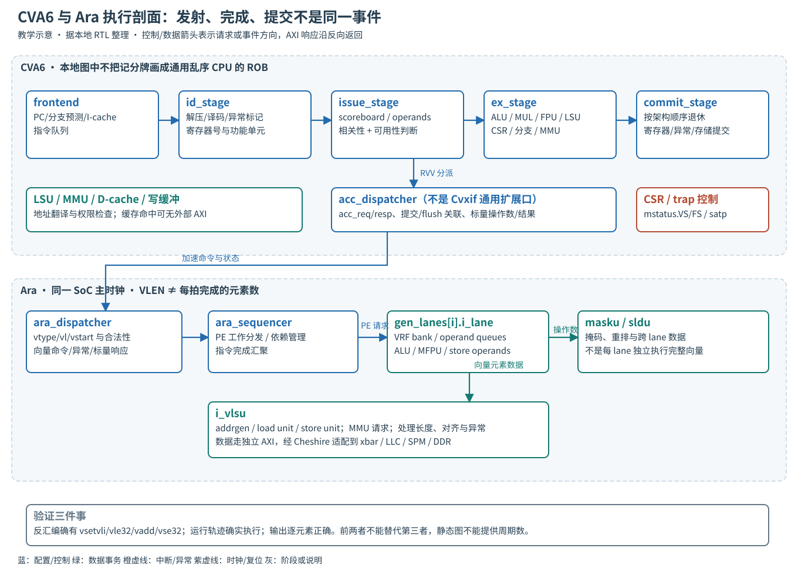

READ · TRACE · BUILD · EXPLAIN
09 · CPU 与 Ara 执行机制
CVA6 指令发射与提交、Ara 向量执行及硬件结果观测。
区分取指、发射（issue）、完成（complete）、提交/退休（commit/retire）；解释一个向量 load 与 CPU 标量 load 的不同路径。前置：RISC-V ISA/ABI、ELF、AXI 和内存章节。场景：数组结果正确，却不确定执行的是否真是向量代码。
本章承接第 04 章的编译、装载与启动流程，重点说明指令进入处理器后的执行和完成机制。CVA6 内部仅讨论理解系统行为所需的功能层次。
软件构建与硬件执行流程

例如 dst[i] = src[i] + 3;，编译器可能把 i 放在寄存器、展开循环甚至自动向量化。不能仅凭 C 形式决定硬件波形。先看 objdump -d -S 找实际 PC/机器码，再由配置决定所选 decoder、LSU、cache 和 Ara。裸机 M-mode 示例通常不建立 Sv39 页表；CPU 具备 MMU 不等于程序已经开启虚拟内存。
CVA6 指令执行与提交机制

- frontend 决定下一个 PC，通过 I-cache 取指，管理预测与取指队列。一次 fetch 可以早于真正退休，错误路径的取指不应计作程序已执行。
- id_stage 处理压缩指令/译码，产生操作数号、立即数、功能单元选择及异常标记。标量 profile、RVV profile 与 first_pass_decoder 的选取决定哪些机器码合法。
- issue_stage / scoreboard 跟踪在途操作、相关性与回写；执行单元可以不同延迟完成。不要把“有记分牌”推成所有指令任意乱序发射。
- ex_stage 包含整数、乘除、浮点、分支、CSR 和 load/store 单元。LSU 进行地址生成、对齐/访问检查与 MMU 请求，再与 D-cache/存储缓冲交互。
- commit_stage 把可退休的结果按架构顺序对外生效，协调异常与存储提交。取指看到某条 store，并不能证明设备已经收到它。
本地 cv64a6_imafdcv_sv39_config_pkg 选择 WT（write-through，写通）D-cache，8 KiB、4 路、256-bit cache line；写缓冲深度 8，DcacheFlushOnFence=0。这里的“写通”不消除 CPU 缓存中可能存在的旧副本，也不保证所有外部 DMA 写都发出 L1 失效。不要将某个 CVA6 profile 的 cache 行为推广到全部配置。
Ara 向量指令执行流程
acc_dispatcher 将向量相关指令及标量操作数送给 Ara，关联提交/flush 和返回状态；本集成 CvxifEn=0，不能照搬 CV-X-IF 插件的接线说明。Ara dispatcher 检查 vtype/vl/vstart、指令类型及异常；sequencer 跟踪依赖、分发处理单元（Processing Element，PE）任务。每条 lane 有分片的向量寄存器文件（Vector Register File，VRF）及运算/操作数通路；mask unit 处理掩码，slide unit 处理跨 lane 重排，VLSU 处理向量地址与数据。
# examples/rvv_add.S 中的关键思路（省略标号与返回）
vsetvli t0, a3, e32, m1, ta, ma # 返回本轮实际 vl，不假设等于 N
vle32.v v0, (a0) # Ara VLSU 从 a 地址取元素
vle32.v v1, (a1)
vadd.vv v2, v0, v1 # lane 运算，掩码/类型由向量状态控制
vse32.v v2, (a2) # 独立 AXI 数据路径
# 指针增量 = t0 * 4；剩余长度减 t0，再循环VLEN=2048 表示每个架构向量寄存器 2048 bit；e32,m1 的最大元素数为 64。137 元素至少分多轮，实际每轮由 vsetvli 返回值决定。2 lanes 影响实现并行度，但不能据此直接承诺固定“每拍两个元素”或某个应用吞吐。对齐、访存回压、指令依赖、VRF 端口和功能单元都会影响时间。
指令执行与结果验证
| 证据 | 看什么 | 不能替代什么 |
|---|---|---|
| 静态机器码 | RVV 汇编对象、最终 ELF 中 vsetvli/vle32/vadd/vse32；其他 C/CRT 使用标量 ISA | 不能证明 PC 曾走到这里 |
| 动态执行 | PC/retire、acc 请求/响应、dispatcher 命令、VLSU AXI、VS/FS/异常 CSR | AXI 活动不等于运算值正确 |
| 结果校验 | 每个元素独立标量期望、尾部守卫、非零失败码；故障注入能失败 | 结果恰好一致不证明一定用了 RVV |
工作目录仓库根；先有 RISC-V GCC。只构建：
bash docs_codex/learning/scripts/build_example.sh rvv spm
# 使用脚本打印的真实路径，不选择旧 ELF
LEARN_RVV='/实际构建目录/lesson.dump'
rg -n 'learn_vadd|vsetvli|vle32|vadd|vse32|mstatus' "$LEARN_RVV"
rg -n 'i_acc_dispatcher|commit_st_barrier_i|DCacheType' .bender/git/checkouts/cva6-20c9d7cbe0dd6995/core/cva6.sv
rg -n 'i_dispatcher|i_sequencer|i_lane|i_vlsu|i_sldu|i_masku' .bender/git/checkouts/ara-2c7b103275a16c87/hardware/src/ara.sv产物在新的 evidence/rvv-spm.XXXXXX；成功判据是符号、向量对象及循环递减可解释。真正运行仍需第 05 章清单修正、SELCFG=3、匹配 RVV profile、mstatus.VS 非 Off、FS 初始化和共享缓冲区条件；异常时回传 mepc/mcause/mtval、vl/vtype/vstart 与首个失败元素。等待上限和运行日志沿用实验手册，不能把本阅读练习报为向量实测。
1. I-cache 发出请求就等于这条指令已退休吗？
不等于。预测错误、异常和 flush 都可能丢弃取来的指令；需看提交/退休证据。
2. 两条 lane 为什么不等于任意程序都快两倍？
程序可能受存储、标量控制、依赖、掩码或重排限制；VLEN 也只是寄存器容量，必须在明确工作负载上量测。
3. VS 打开了，旧标量清单就能跑 RVV 吗？
不能。硬件 profile、decoder、Ara 实例、软件 ISA 和运行时状态必须同时成立。